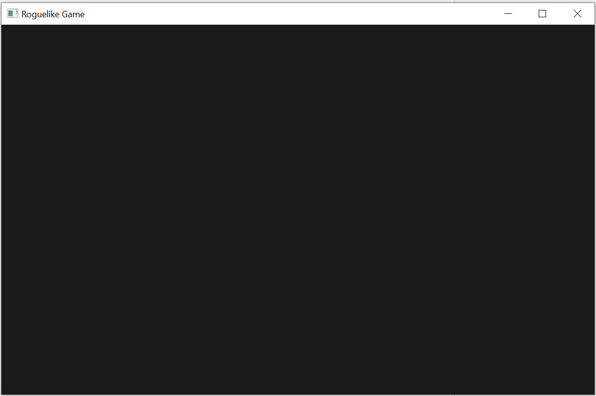
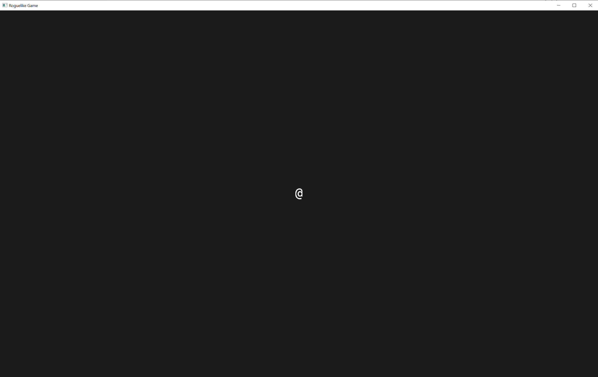

Introduction
This is a tutorial to create a roguelike game using Rust and Bevy.
The tutorial is based on Yet Another Roguelike Tutorial - Written in Python 3 and TCOD and the Bevy Roguelike code available here
Setting Up
Prior knowledge
This tutorial assumes that a reader is familiar with Rust, but of course you can try to read it without knowing Rust.
Installing Rust
In this tutorial I will be installing the latest Rust version and also Rust nightly build for faster development on Windows. The nightly build allows to compile Bevy in a dynamic library once and then reuse it for all the following compilations.
Download Rust from here. I recommend using a 64-bit version. For Windows the button has a title "DOWNLOAD RUSTUP-INIT.EXE (64-BIT)". I used the default settings in the installation.
Creating a project
I created a new project by executing the following command:
cargo new bevy_roguelike_tutorial
and go inside this folder:
cd bevy_roguelike_tutorial
This created the following folder structure:
bevy_roguelike_tutorial
├── .gitignore
├── Cargo.lock
├── Cargo.toml
├── src
│ └── main.rs
└── target
└── ...
With the main code in src/main.rs
fn main() { println!("Hello, world!"); }
Let's compile the code and see that this Rust program is working.
In the command line execute:
cargo run
And you should have the following output:
Compiling bevy_roguelike_tutorial v0.1.0 (C:\...\bevy_roguelike_tutorial)
Finished dev [unoptimized + debuginfo] target(s) in 0.33s
Running `target\debug\bevy_roguelike_tutorial.exe`
Hello, world!
Install Bevy
Here I am setting setting up to use Rust nightly build and use Bevy as a dynamic library.
To install Rust nightly build execute the following command:
rustup install nightly
Create a new file bevy_roguelike_tutorial/rust-toolchain with the following content:
nightly
This step is specifically for Windows users. On Linux the build should work without it:
Create a directory bevy_roguelike_tutorial/.cargo and put a file with name config.toml with the following content:
[target.x86_64-pc-windows-msvc]
linker = "rust-lld.exe"
rustflags = ["-Zshare-generics=off"]
A new line should be added to Cargo.toml after [dependencies]:
[dependencies]
bevy = { version = "0.7.0", features = ["dynamic"] }
After that run
cargo run
After several minutes of compiling you should see the following output:
Finished dev [unoptimized + debuginfo] target(s) in 4m 14s
Running `target\debug\bevy_roguelike_tutorial.exe`
Hello, world!
Everything is compiled and Bevy is added. Goal achieved!
The final code could be found here: Chapter 01 code
Draw "@" symbol and moving around
Showing an empty black window with Bevy
Let's change the code in main.rs to the following:
use bevy::prelude::{App, ClearColor, Color, DefaultPlugins, WindowDescriptor};
fn main() {
App::new()
.insert_resource(WindowDescriptor {
title: "Roguelike Game".to_string(),
width: 80.0 * 10.0,
height: 50.0 * 10.0,
..Default::default()
})
.insert_resource(ClearColor(Color::rgb(0.1, 0.1, 0.1)))
.add_plugins(DefaultPlugins)
.run();
}
And we get the following window:

This part:
.insert_resource(WindowDescriptor {
title: "Roguelike Game".to_string(),
width: 80.0 * 22.0,
height: 50.0 * 36.0,
..Default::default()
})
is responsible for the creation of the window. 10 is the number of pixels in our font. 80 and 50 are the number of columns and lines we will have in our window.
This line is responsible for almost black color of the background:
.insert_resource(ClearColor(Color::rgb(0.1, 0.1, 0.1)))
And this part:
.add_plugins(DefaultPlugins)
adds default plugins of Bevy to the game engine.
Adding PNG font to resources
In this tutorial I used the font DejaVu Sans Mono. I found a PNG file of this font here. Then edited it a bit and got the PNG that I liked. You can download the font from code/chapter02/assets/DejaVu Sans Mono22.png in the repository of this tutorial.
To load the PNG font I added the following code to main.rs:
fn setup(
mut commands: Commands,
asset_server: Res<AssetServer>,
mut texture_atlases: ResMut<Assets<TextureAtlas>>,
) {
// Setup the sprite sheet
let texture_handle = asset_server.load("DejaVu Sans Mono22.png");
let texture_atlas = TextureAtlas::from_grid(texture_handle, Vec2::new(22.0, 36.0), 31, 7);
let texture_atlas_handle = texture_atlases.add(texture_atlas);
}
I also added the following line:
.add_startup_system(setup)
to the main function:
fn main() {
App::new()
.insert_resource(WindowDescriptor {
title: "Roguelike Game".to_string(),
width: 80.0 * 22.0,
height: 30.0 * 36.0,
..Default::default()
})
.insert_resource(ClearColor(Color::rgb(0.1, 0.1, 0.1)))
.add_startup_system(setup)
.add_plugins(DefaultPlugins)
.run();
}
The code is running, but nothing has changed because nothing yes uses the texture atlas.
Drawing the @ symbol
Let's create the player Entity and assign the @ symbol:
First we need to define the player component:
#[derive(Component)]
pub struct Player;
Then we should add the camera and the creation of the player to the setup() function:
// Add a 2D Camera
commands.spawn_bundle(OrthographicCameraBundle::new_2d());
// Spawn the player
commands
.spawn()
.insert(Player)
.insert_bundle(SpriteSheetBundle {
texture_atlas: texture_atlas_handle,
transform: Transform::from_translation(Vec3::new(0., 0., 0.)),
sprite: TextureAtlasSprite::new(94),
..Default::default()
});
We need the camera to render our sprites.
The player entity is created with the spawn() command and then we add components to this entity. To identify that this is a player we add the Player component. To add a sprite we add a SpriteSheetBundle.
texture_atlasis the atlas with our font that will be used.transformis the position of the sprite. 0,0,0 means that it is in the center of the screen.spriteis the sprite that we use from the sprite sheet. Number 94 is the position of the sprite in the sprite sheet (3 lines each have 31 symbols totaling 93 symbols. We start counting at 0 so 92 is the last symbol in line 3 and 93 is the first symbol in line 4. We need the second symbol so the number should be 94)
And after cargo run we get the following picture:

The final code could be found here: Chapter02 code
The final code of main.rs looks like this:
use bevy::prelude::{
App, AssetServer, Assets, ClearColor, Color, Commands, Component, DefaultPlugins, Handle,
OrthographicCameraBundle, Res, ResMut, SpriteSheetBundle, TextureAtlas, TextureAtlasSprite,
Transform, Vec2, Vec3, WindowDescriptor,
};
#[derive(Component)]
pub struct Player;
fn setup(
mut commands: Commands,
asset_server: Res<AssetServer>,
mut texture_atlases: ResMut<Assets<TextureAtlas>>,
) {
// Setup the sprite sheet
let texture_handle = asset_server.load("DejaVu Sans Mono22.png");
let texture_atlas = TextureAtlas::from_grid(texture_handle, Vec2::new(22., 36.), 31, 7);
let texture_atlas_handle = texture_atlases.add(texture_atlas);
// Add a 2D Camera
commands.spawn_bundle(OrthographicCameraBundle::new_2d());
// Spawn the player
commands
.spawn()
.insert(Player)
.insert_bundle(SpriteSheetBundle {
texture_atlas: texture_atlas_handle,
transform: Transform::from_translation(Vec3::new(0., 0., 0.)),
sprite: TextureAtlasSprite::new(94),
..Default::default()
});
}
fn main() {
App::new()
.insert_resource(WindowDescriptor {
title: "Roguelike Game".to_string(),
width: 80.0 * 22.0,
height: 30.0 * 36.0,
..Default::default()
})
.insert_resource(ClearColor(Color::rgb(0.1, 0.1, 0.1)))
.add_plugins(DefaultPlugins)
.add_startup_system(setup)
.run();
}